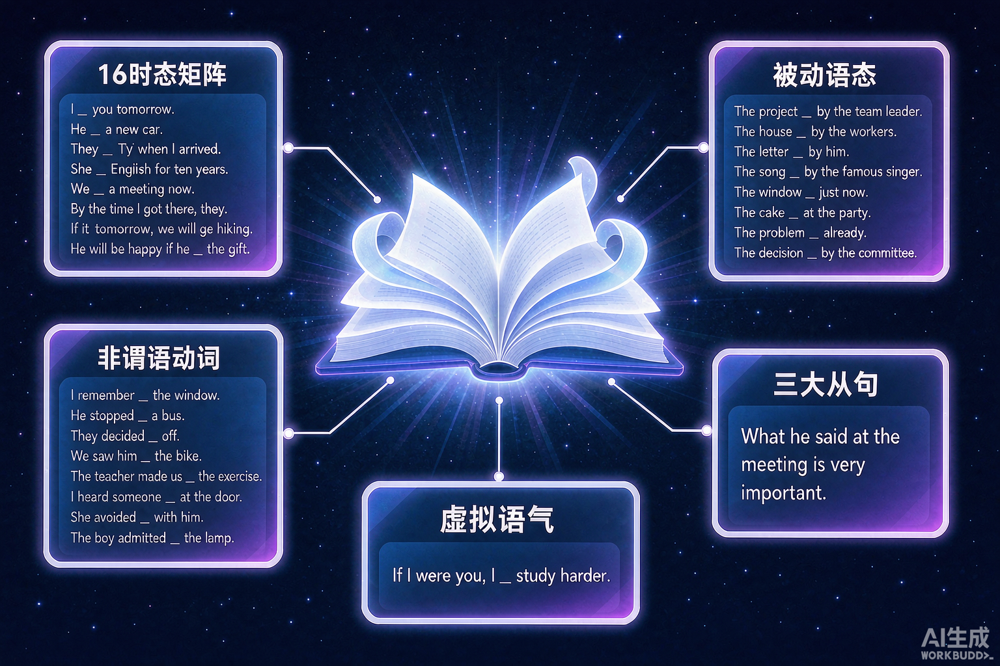

语法填空和短文改错，为什么"语感"总靠不住？
因为命题人考的是规则，不是感觉。

v1.1 完整版：15 个专题详解 · 12 道实战练习 · 全文朗读
选一个最扎心的问题，后面的复习就围绕它展开。
选择或输入后，本课会围绕你的问题展开。
🔥 标记为高考高频考点。接下来 15 页，每页一个专题：先讲基础规则，再给高考考法。
否定前缀：un- happy, dis- agree, im- possible
名词后缀：-tion, -ment, -ness, -er/or, -ist
形容词后缀：-ful, -less, -able, -ous, -ive
副词后缀：-ly 动词后缀：-ize, -en, -ify
class + room → classroom
worth + while → worthwhile
home + work → homework
out + standing → outstanding
water n. 水 → v. 浇水
book n. 书 → v. 预订
empty adj. 空的 → v. 倒空
google n. → v. 搜索
| 冠词 | 核心用法 | 例句 |
|---|---|---|
| a / an | 泛指"一个"；an 看发音不看字母 | an hour / honest boy；a university / European |
| the | 特指、独一无二、序数/最高级、乐器、姓氏复数、the + 形容词表一类人 | the sun；the first；play the piano；the Smiths；the rich |
| 零冠词 | 球类/三餐/学科/语言、by + 交通、复数泛指 | play basketball；have lunch；by bus；Dogs are loyal. |
| 人称 | 主格 | 宾格 | 形容词性物主 | 名词性物主 | 反身 |
|---|---|---|---|---|---|
| 我 | I | me | my | mine | myself |
| 我们 | we | us | our | ours | ourselves |
| 你 / 你们 | you | you | your | yours | yourself / yourselves |
| 他 / 她 / 它 | he / she / it | him / her / it | his / her / its | his / hers / its（罕用） | himself / herself / itself |
| 他们 | they | them | their | theirs | themselves |
介词不能单独作句子成分，后面必须接名词、代词或相当于名词的成分作宾语。
4 种时间 × 4 种状态 = 16 个时态。★ 为高考高频。点击任意格子查看构成与例句。
| 时间 \ 状态 | 一般 | 完成 | 进行 | 完成进行 |
|---|---|---|---|---|
| 现在 | 现在一般时 ★do / does | 现在完成时 ★have / has done | 现在进行时 ★am / is / are doing | 现在完成进行时have been doing |
| 过去 | 过去一般时 ★did | 过去完成时 ★had done | 过去进行时 ★was / were doing | 过去完成进行时had been doing |
| 将来 | 将来一般时 ★will do | 将来完成时will have done | 将来进行时will be doing | 将来完成进行时will have been doing |
| 过去将来 | 过去将来一般时would do | 过去将来完成时would have done | 过去将来进行时would be doing | 过去将来完成进行时would have been doing |
| 时间 \ 状态 | 一般 | 完成 | 进行 | 完成进行 |
|---|---|---|---|---|
| 现在 | do | have done | is doing | have been doing |
| 过去 | did | had done | was doing | had been doing |
| 将来 | will do | will have done | will be doing | will have been doing |
| 过去将来 | would do | would have done | would be doing | would have been doing |
目的、将来、未发生
To pass the exam, he studies hard.
固定接 to do：want / decide / hope / refuse / afford
主动、进行
The girl singing on stage is my sister.
固定接 doing：avoid / enjoy / finish / mind / suggest
被动、完成
The book written by Lu Xun is famous.
固定：have / get sth done（让某事被做）
| 从句类型 | 识别方法 | 高频连接词 |
|---|---|---|
| 名词性从句 | 从句作主语 / 宾语 / 表语 / 同位语 | 不缺成分用 that；缺"什么/谁"用 what / who；表"是否"用 whether（有 or not 只用 whether） |
| 定语从句 | 从句修饰前面的名词（先行词） | 指人 who / whom / that；指物 which / that；表时间/地点/原因 when / where / why；表所属 whose |
| 状语从句 | 从句表时间、条件、让步等逻辑 | 时间 when / while / until / as soon as；条件 if / unless / as long as；让步 although / even if；结果 so…that；目的 so that |
| 虚拟时间 | if 从句 | 主句 |
|---|---|---|
| 与现在相反 | did / were | would / could / might + do |
| 与过去相反 | had done | would / could / might + have done |
| 与将来相反 | did / were to do / should do | would / could / might + do |
suggest / demand / insist / require / order / advise 后的宾语从句，谓语用 (should) + 动词原形：He suggested that we (should) start early.（注意：suggest 表"表明"、insist 表"坚持认为"时不虚拟）
主语单数谓语单数。each / every / either / neither + 单数：Each student has a book. 不定代词 someone / anything + 单数。
集合名词看意思：The family is big（整体）/ The family are watching TV（成员们）。分数/百分数 + of 名词：谓语跟名词走（Two thirds of the water is…）。
就近：there be / either…or / neither…nor / not only…but also 看最近主语。就远：with / together with / as well as / rather than 看前面主语。
It is / was + 被强调部分 + that / who + 其余部分
被强调部分是人 → 可用 who；其余一律 that。be 只有 is / was 两种，时态看句子。
去掉 It is…that 后句子仍完整 → 真强调句；不完整 → 是定语从句或名词性从句。试：It was in the park that I met him. → I met him in the park. ✅ 完整，是强调句。
时间/条件/让步状语从句中，主从句主语一致且从句含 be → 省略"主语 + be"：
When (he was) asked, he smiled.
While (she was) walking, she sang.
If (it is) necessary, call me.
前文已出现的动词，不定式只留 to：
—Would you like to go? —I'd love to.
并列不定式，第二个省 to：I want to sit down and (to) rest.
—Are you ready? —(I am) Not yet.
so / not 替代从句：I think so. / I hope not.
关系代词作宾语可省：The book (that) I bought is good.（作主语不可省）
名词 / 代词 + 分词 / 不定式 / 形容词 / 副词 / 介词短语
它不是句子（无谓语），自带逻辑主语，与主句用逗号隔开，表时间/原因/条件/伴随。
| 类型 | 例句 |
|---|---|
| 名词 + 现在分词（主动/进行） | Weather permitting, we will go hiking. |
| 名词 + 过去分词（被动/完成） | The work done, we went home. |
| 名词 + 不定式（将发生） | So many people to help him, he is sure to succeed. |
| 名词 + 形容词/副词/介词短语 | He came in, face red / book in hand. |
每题对应一个专题。填入正确的词（形式），点击"判定"获得即时反馈与解析。
① 构词法：定成分 → 选词性 → 变形
② 名词：可数复数 + 不可数清单
③ 冠词：a/an/the/零 + 固定搭配
④ 代词：四格 + 不定代词 + it
⑤ 介词：时间/地点/方式 + 搭配
⑥ 时态：16 矩阵 + 标志词
⑦ 被动：be + done，6 格无被动
⑧ 非谓语：找主语 → 判主被动 → 判时间
⑨ 三大从句：定类型 → 看缺不缺成分 → 选词
⑩ 虚拟：三行表 + 信号词 + (should) do
⑪ 主谓一致：语法/意义/就近/就远
⑫ 倒装：否定词/Only/So 开头 → 提助动词
⑬ 强调：It is…that，去掉仍完整
⑭ 省略：状从省主语+be，不定式留 to
⑮ 独立主格：自带主语，选分词形式